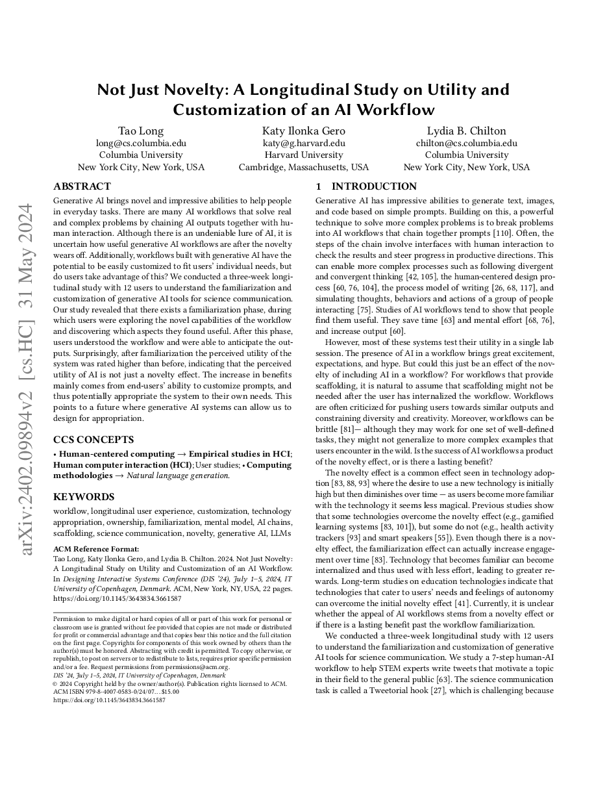
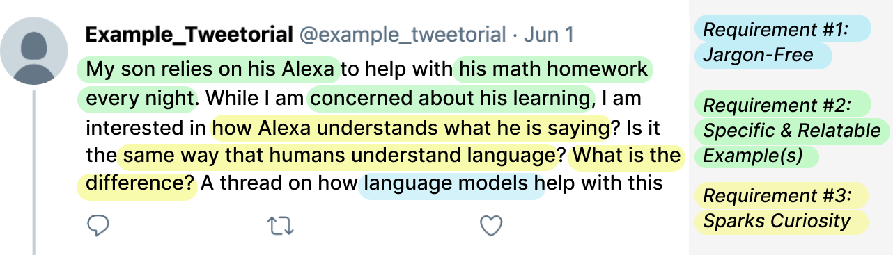
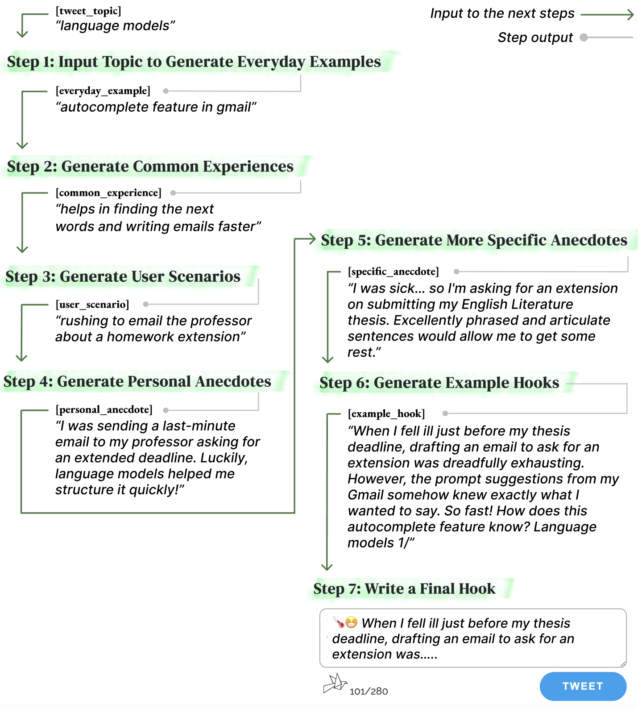
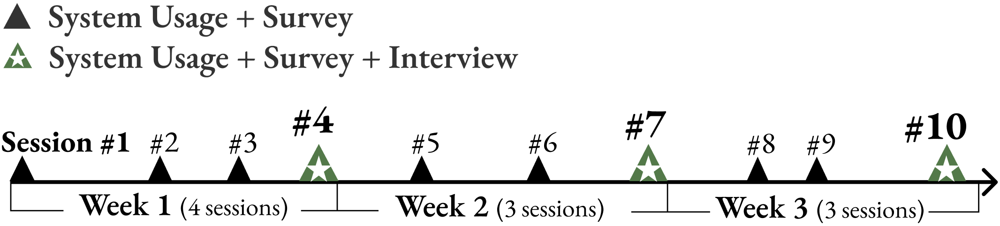
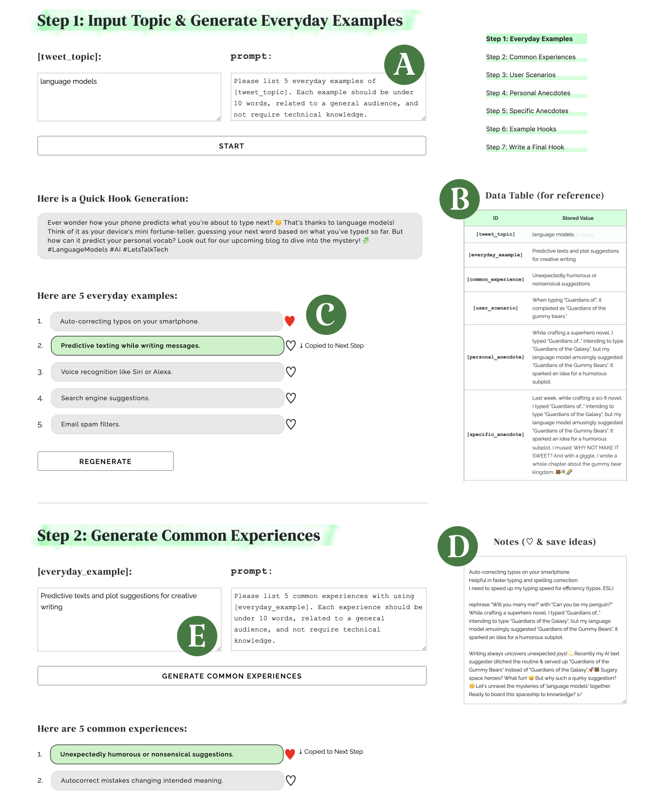
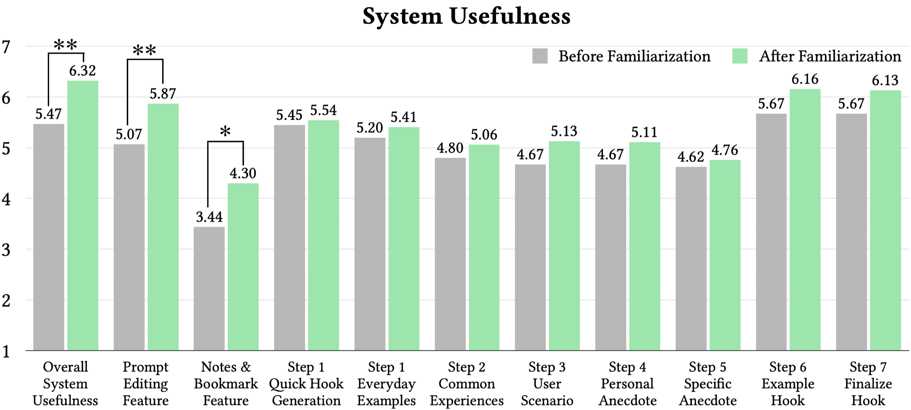
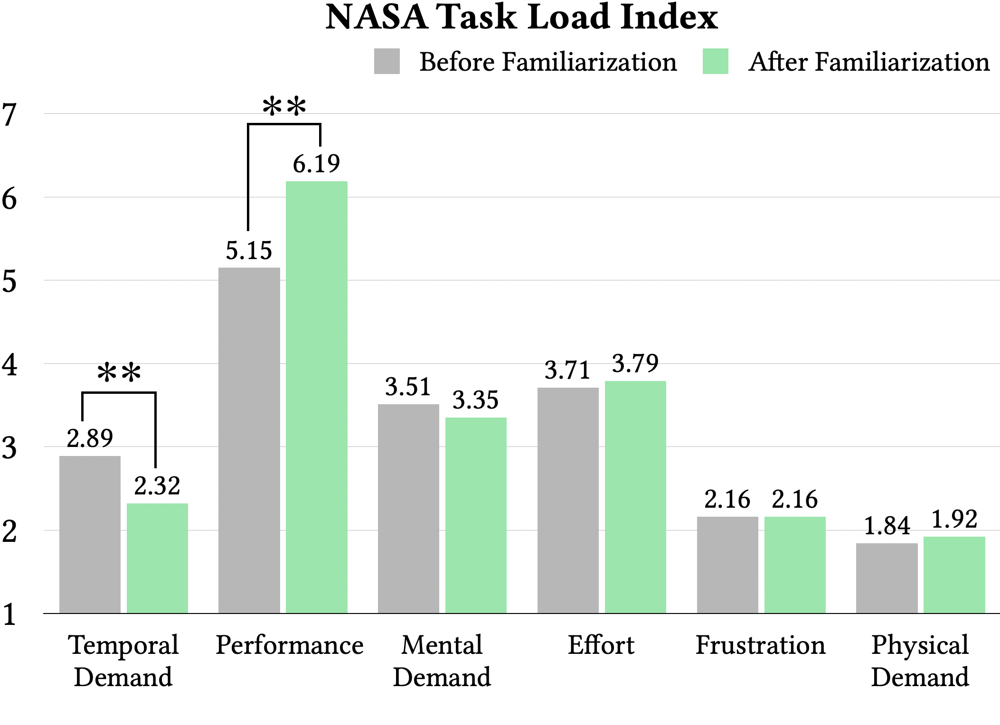
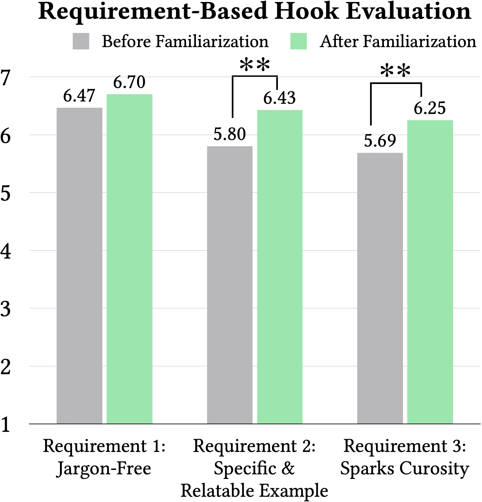

Not Just Novelty: A Longitudinal Studyon Utility and Customization of an AI Workflow
Columbia University
DIS 2024

Is generative AI useful after the novelty wears off?
— A three-week study with 12 users found utility went up, driven by prompt customization.
1/ After the Novelty Wears Off
Generative AI brings impressive abilities, and many AI workflows chain model outputs with human interaction. But it is uncertain how useful these workflows are once the novelty fades, and whether users take advantage of the customization they allow.


Summary
A one-hour evaluation cannot separate genuine utility from novelty. A longitudinal design can.
2/ A Three-Week Longitudinal Study
Twelve PhD-level CS students each wrote 10 hooks in 10 separate sessions over three weeks, with weekly interviews.


Summary
The design combines repeated sessions, weekly interviews, and before/after measures, so change over time is visible.
3/ Familiarization, Customization & Appropriation
There is a familiarization phase in which users explore the workflow and discover what is useful. After it, users understand the workflow and can anticipate its outputs.



Takeaways
- Expect a familiarization phase, and evaluate after it.
- Customization, not novelty, drives added utility over time.
- Generative AI systems can be designed for appropriation.
BibTeX
If this work is useful to you, here is a citation you can copy.
@inproceedings{taolongitudinal,
author = {Long, Tao and Gero, Katy Ilonka and Chilton, Lydia B},
title = {Not Just Novelty: A Longitudinal Study on Utility and Customization of an AI Workflow},
year = {2024},
isbn = {9798400705830},
publisher = {Association for Computing Machinery},
address = {New York, NY, USA},
url = {https://doi.org/10.1145/3643834.3661587},
doi = {10.1145/3643834.3661587},
abstract = {Generative AI brings novel and impressive abilities to help people in everyday tasks. There are many AI workflows that solve real and complex problems by chaining AI outputs together with human interaction. Although there is an undeniable lure of AI, it is uncertain how useful generative AI workflows are after the novelty wears off. Additionally, workflows built with generative AI have the potential to be easily customized to fit users’ individual needs, but do users take advantage of this? We conducted a three-week longitudinal study with 12 users to understand the familiarization and customization of generative AI tools for science communication. Our study revealed that there exists a familiarization phase, during which users were exploring the novel capabilities of the workflow and discovering which aspects they found useful. After this phase, users understood the workflow and were able to anticipate the outputs. Surprisingly, after familiarization the perceived utility of the system was rated higher than before, indicating that the perceived utility of AI is not just a novelty effect. The increase in benefits mainly comes from end-users’ ability to customize prompts, and thus potentially appropriate the system to their own needs. This points to a future where generative AI systems can allow us to design for appropriation.},
booktitle = {Proceedings of the 2024 ACM Designing Interactive Systems Conference},
pages = {782–803},
numpages = {22},
keywords = {AI chains, LLMs, customization, familiarization, generative AI, longitudinal user experience, mental model, novelty, ownership, scaffolding, science communication, technology appropriation, workflow},
location = {Copenhagen, Denmark},
series = {DIS '24}
}